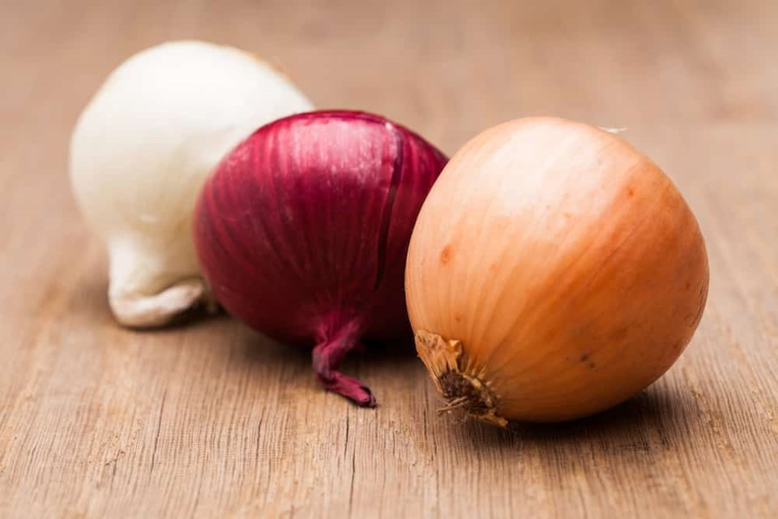
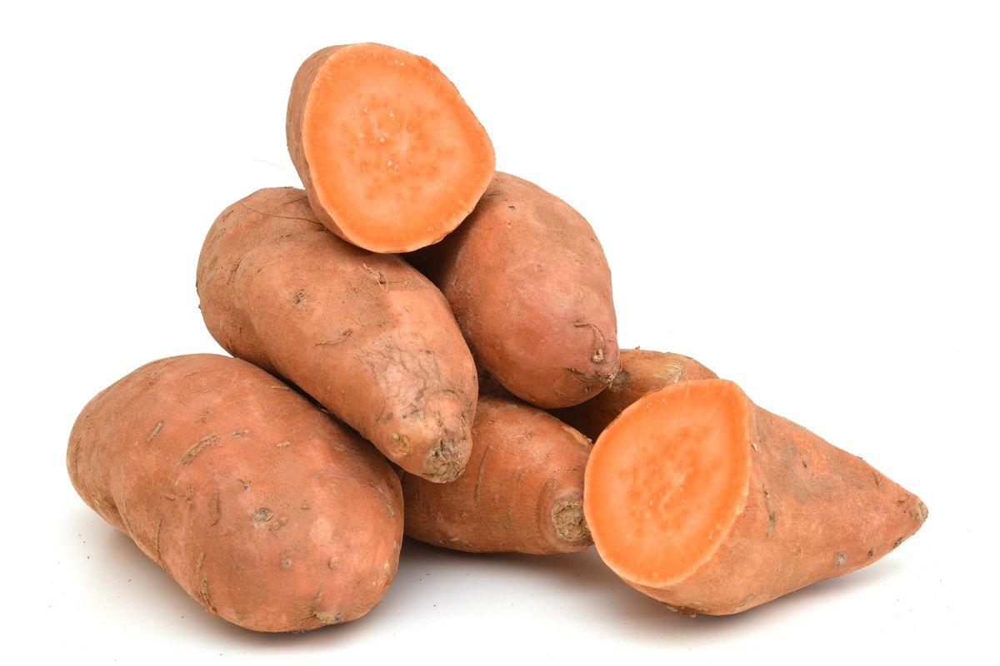
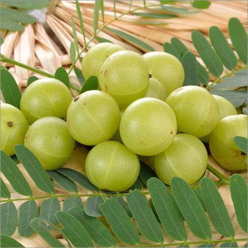
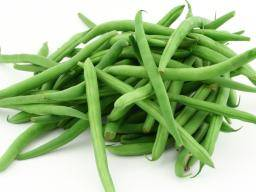
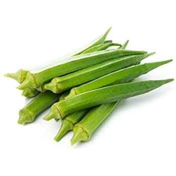
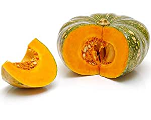
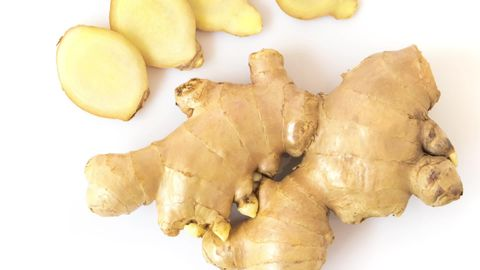
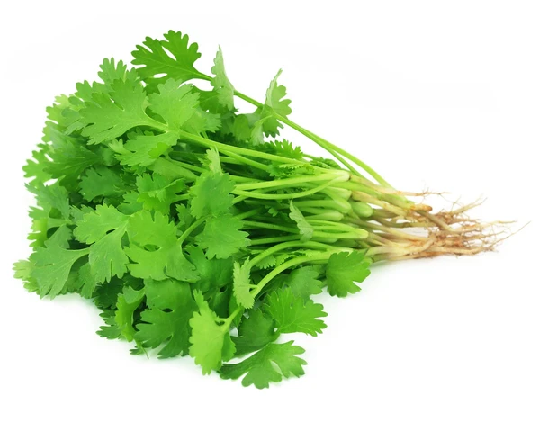
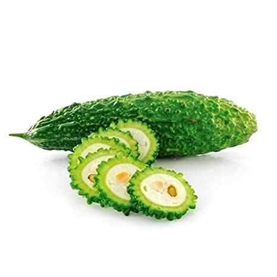

टमाटर - Tomato ( टोमैटो )

प्याज़ - Onion ( अनियन )

मेंढ़क की छतरी - Mushroom ( मशरुम )

शलगम - Turnip ( टरनिप )

शकरकंद - Sweet potato ( स्वीट पोटैटो )

मेंथी - Fenugreek ( फेनुग्रीक )

चुकंदर - Beetroot ( बीटरूट )

पुदीना - Mint ( मिंट )

आंवला - Gooseberry ( गूज़बैरी )

लौकी - Bottle gourd ( बॉटल गौर्ड )
बैंगन - Eggplant ( एग्गप्लांट )

गोभी - Cauliflower ( कॉलीफ्लॉवर )

पत्ता गोभी - Cabbage ( कैबेज )

फलियां - Beans ( बीन्स )

खीरा - Cucumber ( कुकुम्बर )

मटर - Peas ( पीज़ )

लहसुन - Garlic ( गार्लिक )

भिन्डी - Okra ( ओकरा )

मिर्च - Chilli ( चिलि )

कद्दू - Pumpkin ( पम्पकिन )

अदरक - Ginger ( जिंजर )

धनिया - Coriander ( कोरिएंडर )

करेला - Bitter gourd ( बिटर गौर्ड )

पालक - Spinach ( स्पिनेच )